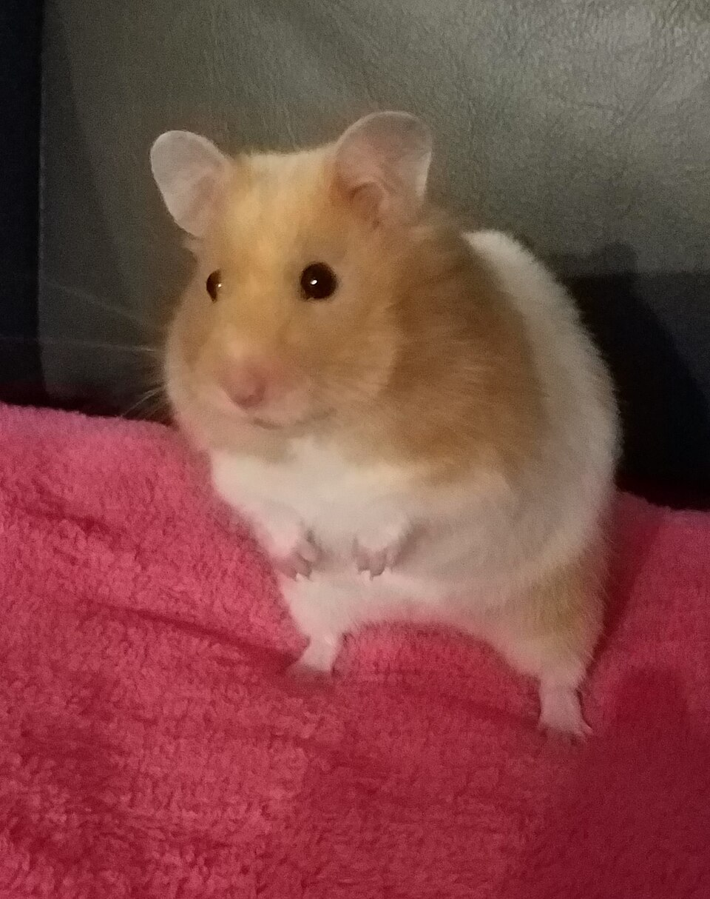

A hamster for beginners: answers to common questions
In short
Syrian hamsters live alone, while dwarf hamsters can sometimes live in pairs if they grew up together. Hamsters need a roomy cage with deep bedding for digging, a solid wheel that keeps their back straight, pelleted food and quiet during the day, as they are active at night.
Reference material. This is general information from open sources, not a diagnosis or a prescription, and it does not replace a consultation with a vet. Talk to a vet before making any decision about your animal’s health. How we prepare our articles

Syrian or dwarf?
The RSPCA lists five species commonly kept as pets: Syrian, Chinese, Campbell’s Russian dwarf, winter white dwarf and Roborovski. Syrians are larger: about 13–18 cm long according to PetMD, while dwarfs are 5–10 cm. The species determines the size of the wheel and cage and whether hamsters can live together.
Can two hamsters live together?
Syrian and Chinese hamsters live alone: they are not naturally social, and Syrians are never housed together. Sources disagree about dwarfs. The RSPCA and PetMD allow pairs or trios if they grew up together, ideally littermates, but warn they may fall out later, so be ready to separate them. PDSA advises against housing Russian dwarfs together. New hamsters are not added to a group.
Which cage
Sources give different sizes:
| Source | Minimum |
|---|---|
| PDSA | 100 × 50 cm (citing a German veterinary animal welfare association) |
| PetMD, Syrian | about 102 × 51 × 41 cm |
| PetMD, dwarf | about 61 × 30 × 30 cm per hamster |
All agree that bigger is better. PDSA prefers a single-level cage to a tall multi-level one. The floor should be solid, not mesh. The RSPCA advises against wooden cages. PetMD gives bar spacing of about 1.3 cm for Syrians and about 0.6 cm for dwarfs.
Bedding and nest
Hamsters dig, so bedding should be deep. PDSA recommends at least 25 cm, PetMD 15–25 cm for Syrians, and for dwarfs 5 cm across the cage with about 20 cm in one corner. Unscented paper bedding is the safest choice. The RSPCA, PDSA and PetMD advise against cotton wool and fluffy fibres: the threads wrap around feet. Hay, shredded paper and unscented toilet paper work for the nest. Sources disagree about wood shavings and newspaper: PDSA considers shavings too dusty and newspaper ink toxic.
The wheel
The wheel should be solid, with no gaps or rungs, and big enough to keep the hamster’s back straight: in a small wheel the back arches, which can cause pain over time. Recommended sizes differ:
| Source | Syrian | Dwarf |
|---|---|---|
| PDSA | at least 30 cm | at least 20 cm |
| PetMD, Syrian care sheet | 28–30 cm | not stated |
| PetMD, general care sheet | at least 20 cm | at least 15 cm |
The RSPCA reminds owners that a wheel shouldn’t be the only enrichment.
Hamsters sleep by day
Hamsters are active at night. Don’t wake them, pick them up while they sleep or clean the cage during the day. A hamster woken suddenly may get scared and bite. Keep the cage somewhere quiet, away from the TV, washing machine and direct sun, and switch the light off at about the same time each evening.
Temperature
Keep your hamster indoors, away from draughts and damp. PDSA recommends a steady 18–21 °C, PetMD 20–24 °C for Syrians. Heat brings a risk of heatstroke, and in the cold a hamster can go into torpor. If a hamster is cold, limp and barely responsive, PetMD advises seeing a vet straight away.
What to feed
- The core is pelleted hamster food: every pellet is the same, so a hamster can’t pick out the tasty bits. PDSA suggests muesli-style mixes only as an occasional extra.
- Fresh vegetables and greens in small amounts, one or two teaspoons a day according to PDSA. Too much fresh food can cause diarrhoea.
- Fruit rarely and in tiny portions. PDSA warns that Russian dwarfs are prone to diabetes, so sugary food is especially harmful for them.
- Don’t give grapes, rhubarb, chocolate, caffeine, alcohol, fruit pits and seeds, raw potato, garlic, or sugary and salty food.
- Hamsters hoard food, so remove leftover fresh food the same day, but leave dry food stores in place when cleaning.
- Water must always be available. Check the bottle daily for leaks or blockages.
Sources contradict each other on onion and tomato: PDSA lists them as suitable, while PetMD advises avoiding onions and unripe tomatoes. It is safer not to give them.
How to pick up a hamster
According to the RSPCA, first let the hamster sniff your hand, then offer two cupped palms so it can climb on by itself. Hold it only a few centimetres above a stable surface: falls from a height are dangerous. Don’t grab or squeeze. Only handle a hamster when it is awake. Children shouldn’t hold a hamster without an adult.
Cleaning
Remove dirty bedding, droppings and leftover fresh food every day or every few days. Sources disagree about full cleans: PetMD says weekly, PDSA weekly for small cages and every few weeks for larger ones, the RSPCA once or twice a month. Put back a little old, dry bedding so the nest still smells familiar.
When to see a vet urgently
Hamsters lose condition quickly and hide pain. See a vet straight away if your hamster eats less, has diarrhoea, has wet or dirty fur under the tail (this may be wet tail), loses weight, breathes with difficulty, sneezes, has discharge from the nose or eyes, drools, has overgrown teeth, has cheek pouches that stay swollen for hours, or an eye bulges out.
What to note down before you call the vet
- species and age
- cage size, bedding depth, wheel diameter
- what you feed
- room temperature
- weight over time
- what the droppings look like
Notes like these are easier to keep in one place. That’s what we’re building Roddi Health for.
Get early accessSources
- RSPCA: keeping hamsters as pets
- RSPCA: creating a good home for hamsters
- RSPCA: what to feed a pet hamster
- RSPCA: hamster behaviour
- RSPCA: keeping hamsters together
- RSPCA: hamster health and welfare
- PDSA: hamsters as pets
- PetMD: hamster care sheet
- PetMD: Syrian hamster care sheet
- PetMD: dwarf hamster care sheet
Facts checked against the sources on 16 November 2026. Found a mistake or a link that doesn’t open? Write to roddihealth@gmail.com.
Roddi Health is not a veterinary clinic and does not provide veterinary services. This article is for information only, may be incomplete or out of date, and does not replace an examination by a vet. You make your own decisions about caring for your animal. Sources are named for reference: they did not write or endorse this text. More about our blog articles.